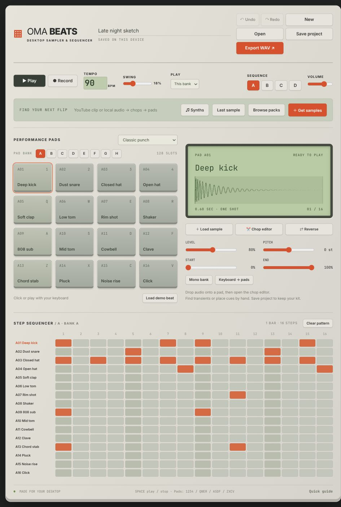

Find the good part.
Sample & chopDrop in your audio. Find transients or place your own cuts. Zoom in, shape the attack, reverse a slice, and put the pieces on your pads.
A hands-on desktop sampler and sequencer.
Chop a sample. Play it your way.
Find the loop you can’t leave alone.

Then make it yours. This is a playable browser demo.
Click a pad or use 1 2 3 4
Swipe to see all 16 steps
A taste of the workflow. The desktop app is where you go deeper.Your demo edits stay in this tab.
From the first hit to the last little adjustment. Everything close enough to keep you in the idea.
Drop in your audio. Find transients or place your own cuts. Zoom in, shape the attack, reverse a slice, and put the pieces on your pads.
Drums over here. Chops over there. Play banks together, or set a bank to mono when one sound should cut the next. Undo is always close.
Start with a bass, lead, key, or pad. Choose your scale, turn the filter, and shape the envelope. Load sixteen notes into a bank and play.
Make it. Keep it. Come back to it. Autosave for the moment. Portable projects for later. WAV export when it’s ready.
Read the guide
Six drum kits. Twelve synths. Room for your own sounds.
Works offline. No account
needed.
Oma Beats is a standalone desktop app. You don’t need a DAW to use it. It doesn’t currently run as a VST/AU plugin or host external plugins; the twelve synth instruments are built in.
Yes. Unzip your pack, then choose Browse packs → Import pack folder in the app. You can also drag audio onto a pad. Splice and other third-party packs aren’t included; download your sounds through your own account and follow their licenses.
The desktop app has an optional YouTube importer with clip boundaries and a direct path to the chop editor. It requires yt-dlp and FFmpeg installed separately. Only import audio you have permission to use. Read the setup guide.
Autosave and your imported library stay on your device. Save a portable .omabeats project to keep a named backup with its audio included, or export a stereo WAV. The website demo is separate and doesn’t save to the desktop app.